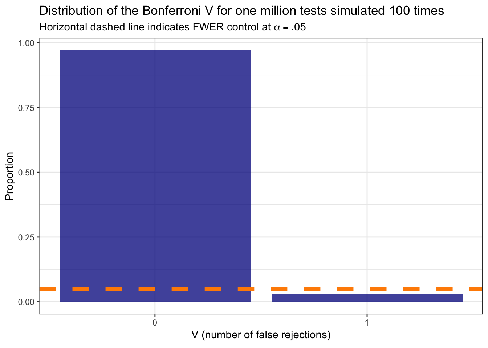
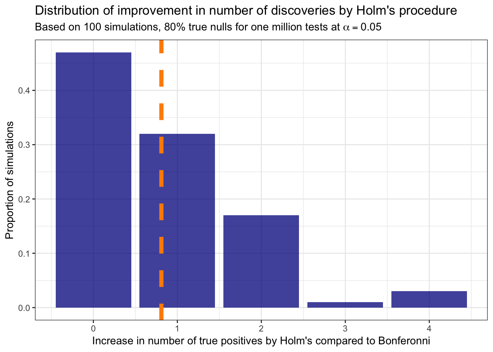
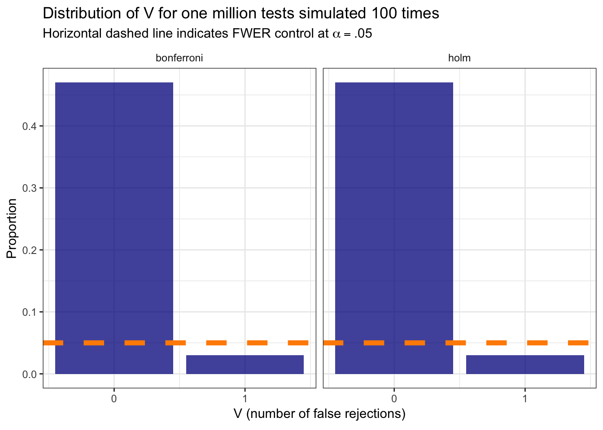
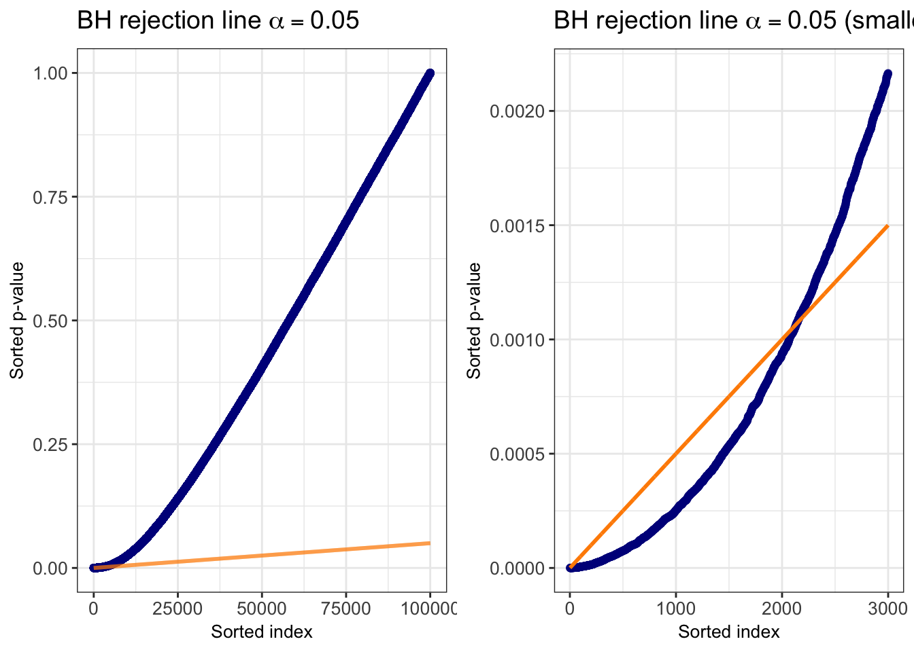
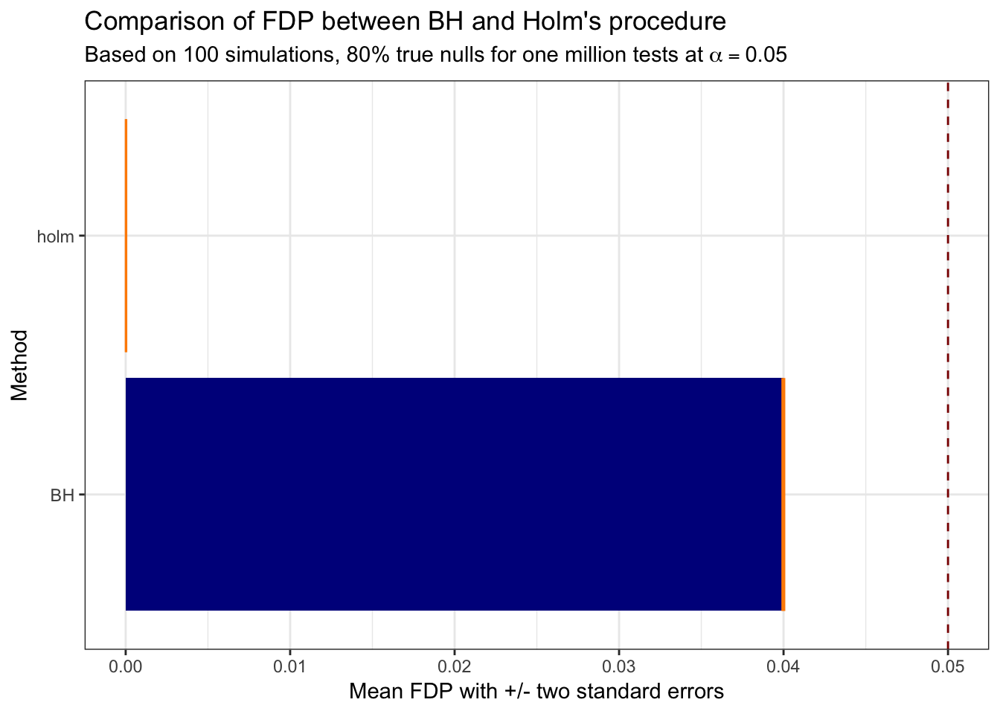

Chapter 2 An introduction to multiple testing
2.1 Motivation
A single hypothesis test proceeds by:
- stating a null hypothesis \(H_0\) and an alternative hypothesis \(H_A\),
- constructing a test statistic \(T\) using the data,
- choose a target level Type I (false positive) error rate \(\alpha\) to control for ,
- and rejecting \(H_0\) in favor of \(H_A\) when the probability of observing \(T\) (or more extreme value) when \(H_0\) is true, is less than or equal to \(\alpha\).
However, in modern scientific practice, it is rare for only a single hypothesis to be tested. Consider the example of genome-wide association studies (GWAS) which are observational studies of typically one million or more variants, known as single nucleotide polymorphisms (SNPs), to identify which variants are associated with a trait/phenotype of interest. If we were testing the association with a certain disease for one million SNPs and simply proceeded as above to reject each individual \(H_{0,i}\) for \(i = 1,...,\ n=1,000,000\) when the p-value \(\leq \alpha = 0.05\), then we would expect to reject 50,000 true null hypotheses! The following code demonstrates this exactly by generating z-scores from the null distribution with mean equal to zero for one million tests and reporting the number of false discoveries, repeating this 100 times.
# Access tidyverse
# install.packages("tidyverse")
library(tidyverse)
# Access latex2exp
# install.packages("latex2exp")
library(latex2exp)
# Generate a pipeline function to return the number of false rejections for a
# two-tailed z test with n tests and target alpha applied to each individual
# test without multiple testing correction:
sim_n_z_tests <- function(n_tests, alpha) {
rnorm(n_tests, 0, 1) %>%
{2 * pnorm(-abs(.))} %>%
{which(. < alpha)} %>%
length %>%
return
}
# Generate 100 times the number of false rejections for simple two-tailed z test
# where all the results are generated from the null distribution:
data.frame("n_rej" = replicate(100, sim_n_z_tests(1000000, .05))) %>%
ggplot(aes(x = n_rej)) +
# Generate a histogram of the number of false rejections:
geom_histogram(fill = "darkblue", alpha = 0.75) +
# Add a vertical line at the mean number:
geom_vline(aes(xintercept = mean(n_rej)), color = "darkorange",
linetype = "dashed", size = 2) +
theme_bw() +
labs(x = "Number of false rejections", y = "Frequency",
title = TeX('Distribution of the number of false rejections for one million tests at $\\alpha = .05$'),
subtitle = "Simulated 100 times, vertical dashed line indicates average number of false rejections")
With such a high number of expected false rejections we have to make a correction. The prevalence of the multiple testing problem in science has led to the development of a variety of approaches and methods for correcting/adjusting p-value cutoffs for the rejection decision while accounting for the presence of multiple tests. This initial set of notes covers the fundamentals of multiple testing, briefly explaining the conservative family-wise error rate (FWER) before diving into our main interest of the false discovery rate (FDR).
2.2 Multiple testing notation
Let \([n]\) equal the set \(\{ 1,..., n\}\), where \(n\) equals the number of tests/hypotheses we are interested in. We denote the hypothesis as \(H_i\), for each \(i \in [n]\), where the set of true null hypotheses is \(\mathcal{H}_0 = \{ i : H_i = 0 \}\) (ie \(i^{th}\) null is true) and \(n_0 = |\mathcal{H}_0|\). We observe p-values \(p_i \in [0, 1]\) for each test \(i\) under the null hypothesis which is commonly referred to as \(H_{0, i}\).
Throughout these notes we will refer to significant p-values as discoveries or rejections interchangeably (ie \(H_i = 0\) is rejected). The table below provides notation that will be used throughout the notes representing the results of testing the \(n\) hypotheses of interest:
| Decision: accept \(H_{0,i}\) | Decision: reject \(H_{0,i}\) | Total | |
|---|---|---|---|
| Truth: \(H_i = 0\) | \(U\) | \(V\) | \(n_0\) |
| Truth: \(H_i = 1\) | \(T\) | \(S\) | \(n - n_0\) |
| Total | \(n - R\) | \(R\) | \(n\) |
In the table above \(U,\ V,\ S,\ T\) are unobserved random variables while \(R\) is an observed random variable. We denote the rejection set as \(\mathcal{R} = \{i: H_i\) is rejected \(\}\), where \(R = |\mathcal{R}|\). The two quantities we will focus on are the number of false discoveries (aka false positives), \(V\), and the total number of discoveries, \(R\).
To be clear, the multiple testing problem of interest is about testing each of the \(n\) hypotheses separately, versus the global testing problem which seeks to answer whether any null hypothesis \(i \in [n]\) can be rejected.
2.3 Family-wise error rate
The classical approach for addressing the multiple testing problem is by controlling the probability of falsely rejecting any null hypotheses. This is known as the __family-wise error rate (FWER):
\[ \text{FWER} = \mathbb{P}( V \geq 1) \]
for some target level \(\alpha\) such that FWER \(\leq \alpha\). Probably the most commonly used multiple comparison procedure (MCP) for cotnrolling FWER is Bonferroni’s method: reject all \(H_{0,i}\) such that \(p_i \leq \alpha / n\). Bonferroni corrects the p-values by the number of tests \(n\) and controls FWER in the strong sense, meaning that by using Bonferroni’s method the FWER \(\leq \alpha\) for all configurations of true and false hypotheses (ie when all true hypotheses versus a fraction of true null hypotheses). Additionally Bonferonni controls FWER when the tests are independent or dependent.
Proof: Using the notation from above, wonsider the random variable:
\[ V_i = \begin{cases} 1 \text{ if } H_{0,i} \text{ is rejected}, \\ 0 \text{ otherwise} \end{cases} \]
where \(V = \sum_{i \in {\mathcal{H}_0}} V_i\). Next we can take the expectation of the number of false discoveries and write it as,
\[ \mathbb{E} [ V ] = \sum_{i \in {\mathcal{H}_0}} \mathbb{E} [V_i] = \sum_{i \in {\mathcal{H}_0}} \mathbb{P} (V_i = 1). \]
Remember for an individual hypothesis test we can control the probability of a Type I error (false positive), \(\mathbb{P}(V_i = 1)\), by rejecting the null only if the p-value is less than some threshold level \(\alpha\). For Bonferroni’s method, we reject the null hypothesis for an individual test if its p-value \(p_i \leq \alpha / n\). This means we can simply plug in the quantity \(\alpha/n\) into the above to arrive at
\[ \mathbb{E} [ V ] = \sum_{i \in {\mathcal{H}_0}} \frac{\alpha}{n} = \frac{n_0}{n} \cdot \alpha. \]
We have now proved that Bonferroni’s method controls FWER because,
\[ \text{FWER} = \mathbb{P}(V \geq 1) \leq \mathbb{P} (V \geq 1) + \mathbb{P}(V \geq 2) + . . . + \mathbb{P}(V \geq n) = \mathbb{E}[V] = \frac{n_0}{n} \cdot \alpha.\ \blacksquare \]
In the code chunk below, we revisit the simulation example from above but now use Bonferroni’s method for rejecting the null hypothesis. We now see that in roughly 95 of the 100 simulations zero hypotheses are rejected (ideal in this setting where the null is true for all tests), while about five simulations result in only one false rejection. A stark contrast from the original approach of just determining each test status separately!
# Generate 100 times the number of false rejections for simple two-tailed z test
# where all the results are generated from the null distribution:
data.frame("n_rej" = replicate(100, sim_n_z_tests(1000000, .05 / 1000000))) %>%
ggplot(aes(x = n_rej)) +
# Generate a barchart of the number of false rejections:
geom_bar(fill = "darkblue", alpha = 0.75,
aes(y = stat(count / sum(count)))) +
# Add a vertical line at the mean number:
geom_hline(yintercept = .05, color = "darkorange",
linetype = "dashed", size = 2) +
scale_x_continuous(breaks = c(0, 1), labels = c(0, 1)) +
theme_bw() +
labs(x = TeX('$V$ (number of false rejections)'), y = "Proportion",
title = TeX('Distribution of the Bonferroni $V$ for one million tests simulated 100 times'),
subtitle = TeX('Horizontal dashed line indicates FWER control at $\\alpha = .05$'))
2.3.1 Holm’s procedure
While the Bonferonni procedure provides FWER control in the strong sense, it can be overly conservative when \(n_0 < n\), and does not take advantage of information provided by the p-values themselves. Intuitively, when testing \(H_i\), we can use the other p-values \(\{ p_j \}_{j \neq i}\) to provide us with some information about, for instance, the proportion of null hypotheses and then adjust the p-value correction accordingly. If we somehow knew the actual \(n_0 < n\), then we could insert \(\alpha / n_0\) into the Bonferroni method to maintain strong FWER control.
Consider the following procedure which adjusts the Bonferroni after observing p-values, known as Holm’s procedure:
- Sort the p-values in ascending order \(p_{(1)} \leq p_{(2)} \leq ... \leq p_{(n)}\), let \(H_{(1)}, H_{(2)}, ..., H_{(n)}\) be their respective hypotheses.
- Step 1: If \(p_{(1)} < \alpha / n\) then reject \(H_{(1)}\) and proceed to Step 2. Otherwise, accept all \(H_{(1)}, H_{(2)}, ..., H_{(n)}\) and stop.
- Step 2: If \(p_{(2)} < \alpha / (n - 1)\) then reject \(H_{(2)}\) and proceed to Step 3. Otherwise, accept all \(H_{(2)}, H_{(3)}, ..., H_{(n)}\) and stop.
- Step \(i\): If \(p_{(i)} < \alpha / (n - i + 1)\) then reject \(H_{(i)}\) and proceed to Step \(i + 1\). Otherwise, accept all \(H_{(i)}, H_{(i + 1)}, ..., H_{(n)}\) and stop.
- Step \(n\): If \(p_{(n)} < \alpha\) then reject \(H_{(n)}\). Otherwise, accept \(H_{(n)}\).
This is called a step-down procedure, stopping the first time \(p_{(i)}\) exceeds the critical value threshold \(\alpha_i = \alpha / (n - i + 1)\). While Bonferroni is by far the most the popular method for multiple comparison error control, Holm’s procedure typically results in more rejections (more power) and also controls FWER strongly.
Proof: Assume the p-values are sorted in ascending order, and let \(i_0 = \underset{i \in \mathcal{H}_0}{\text{arg min}}\ p_i\). This means Holm’s procedure arrives at the first true null hypothesis at step \(i_0\). Since there can be at most \(n - n_0\) false hypotheses preceding the first null hypothesis, we have \(i_0 \leq n - n_0 + 1\). In this search, a false rejection is made if and only if:
\[ p_{(1)} \leq \alpha / n,\ p_{(2)} \leq \alpha / (n - 1), ...,\ p_{(i_0)} \leq \alpha / (n - i_0 + 1) \\ \Rightarrow p_{(i_0)} \leq \alpha / (n - i_0 + 1) \leq \alpha / n_0. \] Holm’s procedure thus leads to strong FWER control, regardless of whether or not tests are independent, using the union bound:
\[ \text{FWER} = \mathbb{P}( \underset{i \in \mathcal{H}_0}{\text{min}}\ p_i \leq \alpha / n_0) \leq \sum_{i \in \mathcal{H}_0} \mathbb{P} (p_i \leq \alpha / n_0) = \alpha. \blacksquare \]
Given the fact that Holm’s procedure controls the FWER strongly and is not as
conservative as Bonferroni’s method, Holm’s should always be used instead.
To reinforce this idea, the following code provides a simple simulation demonstrating
the improved power from Holm’s procedure resulting in the same or increased
number of true positives while providing the same FWER control. A common excuse
for using Bonferroni’s method is that it is simpler to implement. For anyone that
uses R however that is just not true. Included in the base R stats library
is the p.adjust function which takes in the vector of p-values and type of
method returning a vector of adjusted p-values. For Bonferonni this means multiplying
each p-value by the total number of tests considered, while for Holm’s each p-value
\(p_i\) is multiplied by the respective \(n - i + 1\), and then determining which
adjusted p-values are less than the target FWER threshold \(\alpha\).
# Define a function that takes in the number of null tests, number of true
# alternative tests, a target level FWER alpha, an argument for the
# alternative effect size with the default of 3, and two methods to compare
compare_multi_testing <- function(n_null, n_alt, alpha, alt_effect_size = 3,
method1, method2) {
# First generate vector of z-scores for both null and alternatives:
pvals <- c(rnorm(n_null, 0, 1), rnorm(n_alt, alt_effect_size, 1)) %>%
# Now generate the p-values:
{2 * pnorm(-abs(.))}
# Generate a vector of the actual test types:
test_types <- c(rep("null", n_null), rep("alt", n_alt))
# Now use the p.adjust function to create vectors of the adjusted p-values
# for both Bonferonni and Holm's procedure:
m1_pvals <- p.adjust(pvals, method = method1)
m2_pvals <- p.adjust(pvals, method = method2)
# Return a data frame row with the number of discoveries and false rejections
# First create a vector of the discovery indices for each approach:
m1_i <- which(m1_pvals < alpha)
m2_i <- which(m2_pvals < alpha)
# Vectors of true null indices:
true_null_i <- which(test_types == "null")
# True alt indices:
true_alt_i <- which(test_types == "alt")
# Now make the dataframe to return (in long form to make it easier to plot
# and using the notation from above for the column names):
data.frame("method" = c(method1, method2),
"n0" = rep(n_null, 2),
"n" = rep(n_null + n_alt, 2),
"R" = c(length(m1_i), length(m2_i)),
"V" = c(length(which(m1_i %in% true_null_i)),
length(which(m2_i %in% true_null_i))),
"S" = c(length(which(m1_i %in% true_alt_i)),
length(which(m2_i %in% true_alt_i)))) %>%
return
}
bf_holm_sims <- map_dfr(1:100,
function(x) {
compare_multi_testing(n_null = 800000,
n_alt = 200000,
alpha = .05,
method1 = "bonferroni",
method2 = "holm") %>%
mutate(sim_i = x)
})
# Display the distribution of differences in number of true positives by
# Holm's with Bonferonni:
bf_holm_sims %>%
# Can just select the method, S, and sim_i columns
select(method, S, sim_i) %>%
# Now spread out so the difference between the two methods can easily
# be taken:
spread(method, S) %>%
# How many more did Holm's find?
mutate(improvement = holm - bonferroni) %>%
ggplot(aes(x = improvement)) +
geom_bar(fill = "darkblue", alpha = 0.75,
aes(y = stat(count / sum(count)))) +
geom_vline(aes(xintercept = mean(improvement)), color = "darkorange",
linetype = "dashed", size = 2) +
theme_bw() +
labs(x = "Increase in number of true positives by Holm's compared to Bonferonni",
y = "Proportion of simulations",
title = "Distribution of improvement in number of discoveries by Holm's procedure",
subtitle = TeX('Based on 100 simulations, 80% true nulls for one million tests at $\\alpha = 0.05$'))
bf_holm_sims %>%
ggplot(aes(x = V)) +
# Generate a histogram of the number of false rejections:
geom_bar(fill = "darkblue", alpha = 0.75,
aes(y = stat(count / sum(count)))) +
# Add a vertical line at the mean number:
geom_hline(yintercept = .05, color = "darkorange",
linetype = "dashed", size = 2) +
scale_x_continuous(breaks = c(0, 1), labels = c(0, 1)) +
theme_bw() +
facet_wrap(~ method, ncol = 2) +
labs(x = TeX('$V$ (number of false rejections)'), y = "Proportion",
title = TeX('Distribution of $V$ for one million tests simulated 100 times'),
subtitle = TeX('Horizontal dashed line indicates FWER control at $\\alpha = .05$')) +
theme(strip.background = element_blank())
2.3.2 Step-Up with Hochberg
Another way of proving the Holm’s procedure result, is by closing the Bonferroni global test (maybe we should discuss this approach?). The Hochberg procedure is another such approach that follows from the closure principle, by closing Simes (didn’t mention earlier), and considered a step-up procedure. To make this clear, we mentioned before that Holm’s method is known as a step-down procedure, taking one step (test) at a time until the p-value fails to be below the threshold (stepping down on the test statistics). Holm’s can be written more concisely,
- Holm’s:
- start \(j = 0\)
- while \(p_{j + 1} \leq \alpha / (n - j)\)
- step \(j = j + 1\)
- end
- Reject \(H_{(1)}, ...,\ H_{(j)}\)
In contrast, the Hochberg procedure moves backwards and steps up on the test statistics, stops as soon as it finds a p-value below the threshold to reject all the remaining tests. Specifically we write,
- Hochberg:
- start \(j = n\)
- while \(p_{(j)} > \alpha / (n - j + 1)\)
- step \(j = j - 1\)
- end
- Reject \(H_{(1)}, ...,\ H_{(j)}\)
Note: It’s a little confusing at first to see these two methods called step-down and step-up procedures since those appear to be the opposite of what they’re doing, ie Hochberg starts at \(n\) and moves backwards. But the step direction, up or down, is not referring to the p-values but the test statistics themselves (more specifically absolute values of the test statistics).
Step-up procedures will generally be more powerful than step-down procedures, but in this case Hochberg controls FWER with the caveat that we’re assuming the tests are independent of one another. This is a more stringent setting than before with Bonferroni or Holm’s which control FWER regardless of the dependence between tests. We should focus a section of notes entirely on handling dependent tests. Given the name of the method, Hochberg leads into our next section, and one of primary interest in the area of multiple testing.
2.4 False discovery rate
Introduced by Benjamini and Hochberg (1995), the false discovery rate (FDR) is a multiple testing error control criterion ideally suited for scenarios such as GWAS where we are potentially testing millions of SNPs. Rather than trying to make it unlikely that even one false discovery is made, we can instead control the expected false discovery proportion (FDP):
\[ \text{FDP} = \frac{V}{\text{max}(R, 1)} = \begin{cases} \frac{V}{R},\text{ if } R \geq 1 \\ 0,\text{ otherwise} \end{cases} \]
However, we do not observe \(V\) which means the above FDP is an unobserved random variable. The FDR is simply defined as its expectation,
\[ \text{FDR} = \mathbb{E}[\text{FDP}]. \]
From this definition, it is clear that FDR control tells us nothing about an individual test, but rather if we repeated experiments many times then on average we will control the FDP at our desired target level \(\alpha\). This only provides us with a very weak bound on the probability of observing the FDP exceed a threshold folloinwg Markov’s inequality (useful to show this or no?). It’s easy to see that FWER control implies FDR control: we know that \(1_{\{V \geq 1\}} \geq\) FDP since \(V \leq R\), and taking the expectation of both sides gives us \(\mathbb{P}(V \geq 1) \geq\) FDR. The converse does not hold obviously, as FDR is equivalent to FWER only under the global null setting where \(V = R\), all discoveries/rejections are false positives. Meaning, FDR can be viewed as a very weak form of error control. This is not necessarily a negative feature, but instead gives us greater power in addressing the multiplicity problem compared ot FWER control.
2.4.1 Benjamini-Hochberg procedure
Benjamini and Hochberg (1995) proposed the following procedure, which we’ll refer to as BH, to control the FDR at target level \(\alpha\):
- Sort the p-values in ascending order: \(p_{(1)} \leq \cdot \cdot \cdot \leq p_{(n)}\)
- Let \(i_0\) be the largest \(i\) for which \(p_{(i)} \leq \frac{i}{n} \alpha\)
- Reject all \(H_{(i)}\) with \(i \leq i_{(0)}\)
The following code chunk generates the results for one million tests, to visualize this step-up procedure using same proportion of null results (80%) as the Holm’s demonstration above but with fewer tests (100,000) and weaker alternative effect size (\(\mu = 2\)) just for visualization purposes.
sim_bh_data <- function(n_null, n_alt, alpha, alt_effect_size = 3) {
# First generate vector of z-scores for both null and alternatives:
pvals <- c(rnorm(n_null, 0, 1), rnorm(n_alt, alt_effect_size, 1)) %>%
# Now generate the p-values:
{2 * pnorm(-abs(.))}
# Generate a vector of the actual test types:
test_types <- c(rep("null", n_null), rep("alt", n_alt))
# Now use the p.adjust function to create vectors of the adjusted p-values
# for BH:
bh_pvals <- p.adjust(pvals, method = "BH")
# Return a dataframe with the p-values and a column indicating whether or not
# it was rejected under BH and reutnr
data.frame("pvals" = pvals,
"bh_rejection" = bh_pvals < alpha) %>%
return
}
# Generate the example data, then arrange it by the p-value and create
# a column that serves as the BH threshold:
bh_data_example <- sim_bh_data(80000, 20000, alpha = 0.05,
alt_effect_size = 2) %>%
arrange(pvals) %>%
mutate(test_i = 1:n(),
bh_threshold = .05 * test_i / n())
# Access cowplot
# install.packages("cowplot")
library(cowplot)
all_bh_plot <- bh_data_example %>%
ggplot(aes(x = test_i)) +
geom_point(aes(y = pvals), color = "darkblue", alpha = 0.5) +
geom_line(aes(y = bh_threshold), color = "darkorange", size = 1) +
labs(x = "Sorted index", y = "Sorted p-value",
title = latex2exp('BH rejection line $\\alpha = 0.05$')) +
theme_bw() +
theme(axis.title = element_text(size = 10),
axis.text = element_text(size = 10),
plot.title = element_text(size = 14))
zoomed_bh_plot <- bh_data_example %>%
dplyr::filter(test_i <= 3000) %>%
ggplot(aes(x = test_i)) +
geom_point(aes(y = pvals), color = "darkblue", alpha = 0.5) +
geom_line(aes(y = bh_threshold), color = "darkorange", size = 1) +
labs(x = "Sorted index", y = "Sorted p-value",
title = latex2exp('BH rejection line $\\alpha = 0.05$ (smallest 3000 p-values)')) +
theme_bw() +
theme(axis.title = element_text(size = 10),
axis.text = element_text(size = 10),
plot.title = element_text(size = 14))
plot_grid(all_bh_plot, zoomed_bh_plot, ncol = 2)
The BH procedure is adaptive in the sense that it depends on the specific p-values, meaning that two different sets of p-values could generate different rejection thresholds for the same target level \(\alpha\). Most importantly, under the assumption of independent tests (just like Hochberg’s procedure), BH controls the FDR at target level \(\alpha\) regardless if all tests or just proportion are truly null. In fact, BH actually provides conservative FDR control, where the FDR under BH for target level \(\alpha\) is such that,
\[ FDR = \frac{n_0}{n} \cdot \alpha \leq \alpha. \]
The next code chunk compares the performance of BH with Holm’s, demonstrating the tremendous increase in power:
bh_holm_sims <- map_dfr(1:100,
function(x) {
compare_multi_testing(n_null = 800000,
n_alt = 200000,
alpha = .05,
method1 = "BH",
method2 = "holm") %>%
mutate(sim_i = x)
})
# Display the comparison of power (S / n_alt) between the two methods:
bh_holm_sims %>%
# Calculate the power:
mutate(power = S / (n - n0)) %>%
# Can just select the method, power, and sim_i columns
select(method, power, sim_i) %>%
# Now generate the violin plot comparing the power distribution for
# both methods:
ggplot(aes(x = method, y = power)) +
stat_summary(fun.y = mean, geom = "bar", fill = "darkblue") +
stat_summary(fun.data = mean_se, geom = "errorbar", mult = 2, color = "darkorange") +
coord_flip() +
theme_bw() +
labs(x = "Method",
y = "Mean power with +/- two standard errors",
title = "Comparison of power between BH and Holm's procedure",
subtitle = TeX('Based on 100 simulations, 80% true nulls for one million tests at $\\alpha = 0.05$'))
But as the saying goes, with great power comes great responsibility, because a method for controlling FDR is not appropriate for every situation such as one with more costly mistakes. The following comparison between the FDP for Holm’s and BH reveals that conservative nature of BH in this case actually controlling the FDR at \(0.8 \cdot 0.05 = 0.04\), clearly less than the target level FDR of 0.05. Several methods have been developed addressing this conservative nature of BH, improving upon its power while including guaranteed FDR control. These will be covered in future notes.
# Display the comparison of FDP (V / R) between the two methods:
bh_holm_sims %>%
# Calculate the fdp:
mutate(fdp = V / R) %>%
# Can just select the method, FDP, and sim_i columns
select(method, fdp, sim_i) %>%
# Now generate the violin plot comparing the power distribution for
# both methods:
ggplot(aes(x = method, y = fdp)) +
stat_summary(fun.y = mean, geom = "bar", fill = "darkblue") +
stat_summary(fun.data = mean_se, geom = "errorbar", mult = 2, color = "darkorange") +
geom_hline(yintercept = .05, linetype = "dashed", color = "darkred") +
coord_flip() +
theme_bw() +
labs(x = "Method",
y = "Mean FDP with +/- two standard errors",
title = "Comparison of FDP between BH and Holm's procedure",
subtitle = TeX('Based on 100 simulations, 80% true nulls for one million tests at $\\alpha = 0.05$'))
Proof:
For each \(i \in \mathcal{H}_0\) let \(V_i = 1_{\{ H_i rejected\}}\), then
\[ \text{FDP} = \sum_{i \in \mathcal{H}_0} \frac{V_i}{\text{max}(R, 1)}. \]
Let’s just assume that \(\mathbb{E}[V_i / \text{max}(R, 1)] = \alpha / n\). Using this fact the result immediately follows:
\[ \text{FDR} = \mathbb{E}[\text{FDP}] = \sum_{i \in \mathcal{H}_0} \mathbb{E} \Big[\frac{V_i}{\text{max}(R, 1)} \Big] = \sum_{i \in \mathcal{H}_0} \frac{\alpha}{n} = \frac{n_0}{n} \cdot \alpha. \]
Now comes the difficult part, proving the above claim that \(\mathbb{E}[V_i / \text{max}(R, 1)] = \alpha / n\).
Insert martingale proof
References
Benjamini, Yoav, and Yosef Hochberg. 1995. “Controlling the False Discovery Rate: A Practical and Powerful Approach to Multiple Testing.” Journal of the Royal Statistical Society. Series B (Methodological) 57 (1). [Royal Statistical Society, Wiley]:289–300. http://www.jstor.org/stable/2346101.